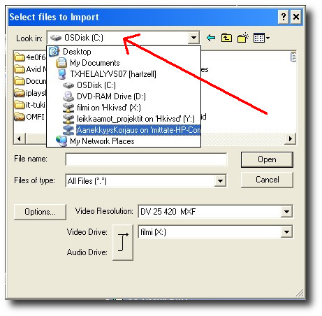
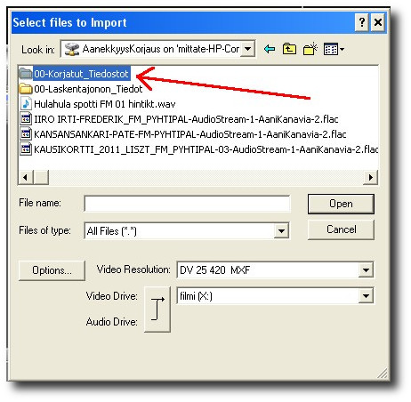
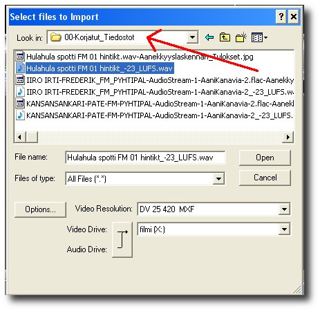

Äänekkyyskorjattujen tiedostojen tuominen Avid - Media Composeriin
Esimerkissä tuodaan Avidin biniin Import - toiminnolla äänekkyyskorjattuja
tiedostoja.
Ensin ÄänekkyysKorjaus - palvelimen levyn pitää olla mountattuna työasemaan
(katso
ohje täältä).
Klikkaa binin ikkunassa tyhjää kohtaa hiiren oikealla napilla ja valitse
menusta vaihtoehto "Import".
Klikkaa Seuraavassa ikkunassa sen ylälaidassa näkyvää luukkua ja valitse
listasta levyksi "AanekkyysKorjaus".

Ikkunassa näkyy nyt ÄänekkyysKorjaus - palvelimen kovalevyn sisältö.
Äänekkyyskorjatut tiedostot löytyvät palvelimen hakemistosta "00-Korjatut_Tiedostot",
tuplaklikkaa se auki.

Äänekkyyskorjatun äänitiedoston tunnistaa sen nimen perässä olevasta
tekstistä "-23_LUFS", klikkaa halutut äänitiedostot
aktiiviseksi ja klikkaa "Open", Avid importoi valitut
tiedoston biniin.
